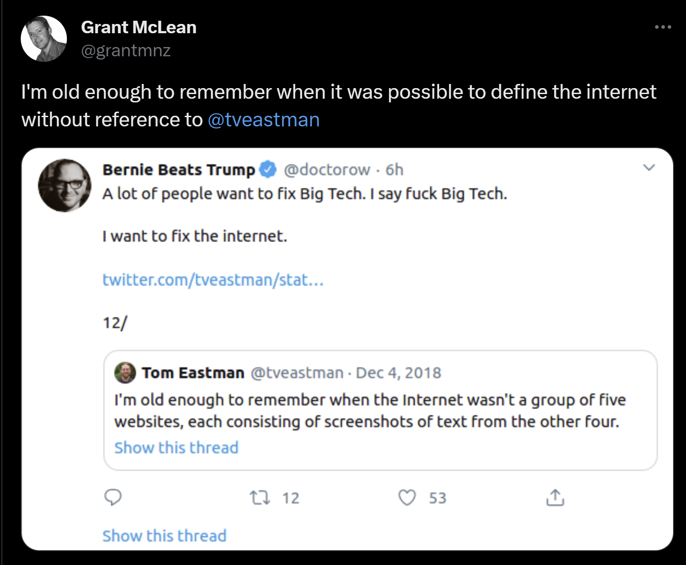

The story arc of THE MISTAKES
-
make the internet
-
centralise it to monetise it
-
choose passwords instead of verified cryptographic end points
-
enshitification through greed on search monopoly
-
closed ecosystems
-
bots everywhere
-
2FA everywhere, oh god it’s everywhere
-
pay for mitigation with increasingly intrusive gatekeeping and more enshitification
-
invent AI, before asking if we needed AI
-
immediately attempt to commodify it, bots proliferate
-
agree that search is now unusable
-
make people pay for essentially the late 90’s search experience via AI
-
remove viable search from 98.5% of the world
-
boil the oceans
-
everyone build an underground bunker (not you, them)
-
collect underpants
-
…
-
profit??
-
This isn’t a new problem, but seems perhaps to be accelerating.

AI augmented search is wasteful
- In conversation with Doug Weir, Director of the Conflict and Climate Observatory.
Energy Consumption and Climate Impact of AI search
- The rapid adoption in internet search has significant implications for energy consumption and climate change, and excluding much of the world from viable knowledge discovery.
- Artificial Intelligence Impact on the Environment: Hidden Ecological Costs and Ethical-Legal Issues | Zhuk | Journal of Digital Technologies and Law (lawjournal.digital)
- Data Centers and Energy Use
- GenAI relies on massive data centers, which consume substantial amounts of energy. Talk is now shifting to gigawatt datacentres Leopold Aschenbrenner . The International Energy Agency (IEA) projects that data centers’ electricity consumption will double by 2026, equivalent to Japan’s current total consumption. These data centers are primarily powered by fossil fuels, contributing significantly to greenhouse gas emissions.
- Training a single AI model can emit up to 626,000 pounds of carbon dioxide equivalent, nearly five times the lifetime emissions of the average American car.
- The carbon footprint of GenAI models is exacerbated by their energy-intensive nature and the need for frequent hardware replacements, which contribute to electronic waste.
- The new AI Google search is incredibly wasteful
- What Do Google’s AI Answers Cost the Environment? | Scientific American
- The carbon impact of AI vs search engines | Insights | Yard (weareyard.com)
- Comparison to Traditional Search:
- Adding AI to Google Search increases its energy use more than tenfold, potentially matching the electricity usage of a small country like Ireland.
- In contrast, traditional search engines like Google’s original search engine use significantly less energy, with an estimated 0.3 watt-hours per search.
Economic Exclusion
- The nexus where payments, search, and AI converge marks a transformative period for the internet. The traditional model of free data access and ad-supported revenue is being challenged by AI capabilities necessitating paid data agreements and enhanced monetisation strategies. This evolution impacts everything from user behaviour and regulatory frameworks to financial viability and market competition, signalling a profound shift in the digital ecosystem.
- AI-driven search engines are changing the fundamental economics of the web. Search GPT, developed by OpenAI, demonstrates this shift, relying less on traditional web crawling and more on curated, formalised partnerships with publishers to avoid legal issues over scraping. The new AI economy is increasingly creating a “two-tier” web, where access to valuable data and knowledge is controlled by those with the capital to enter into such partnerships, as noted by the Brookings Institution.
- Global Accessibility
- Meanwhile, the International Telecommunication Union has pointed out that these AI tools are inaccessible to regions with weaker infrastructure, worsening digital divides. The burden of high costs and heavy energy use has disproportionately negative effects on developing nations, making AI-powered search a privilege of the wealthy and connected.
- The impact of artificial intelligence on human society and bioethics - PMC (nih.gov)
- Cost and Accessibility Barriers:
- The high energy costs associated with GENAI data centers are passed on to users, making these services less accessible to those in lower-income regions or with limited internet infrastructure.
- The economic burden of GENAI adoption can further exacerbate existing digital divides, excluding those who cannot afford the necessary infrastructure or energy costs.
- Alternative Approaches:
- Researchers suggest that more specialized, less carbon-intensive models could be used for specific tasks, reducing energy consumption and making these tools more accessible to a broader audience.
- The only other option is a phase transition to a new internet paradigm, with higher signal to noise, through aligned incentives and cryptographically assured end points.
- Global Accessibility
Factors
Economic Models and Monetisation Strategies
- The transition from free data access to paid partnerships reflects a deeper change in economic models within the digital landscape. OpenAI’s partnerships with major publishers for Search GPT indicate a movement towards a more closed, monetised web. These partnerships enable OpenAI to offer its AI-driven services legally and more sustainably, albeit at a higher operational cost, potentially offset by future advertising revenues or subscription models.
Regulatory and Market Dynamics
- Regulatory environments are likely to influence the battle between traditional search engines and AI-driven alternatives. The European Union’s challenges in legislating competition within the search market underscore the dominance of established entities like Google. However, AI-driven search engines like Search GPT might benefit from regulatory shifts aiming to break monopolistic hold, thereby fostering competition and innovation.
User Behaviour and Adoption
- A critical factor in the success of AI-driven search engines will be user adoption. While AI-enhanced search engines promise more accurate and contextually relevant results, there remains scepticism about whether users will transition from well-known traditional search engines like Google. Improvements in AI capabilities must demonstrate a substantial enhancement in user experience to effectively drive this behavioural shift.
Cloud Infrastructure and Competitive Dynamics
- Microsoft’s role as a cloud infrastructure provider for both Bing and OpenAI highlights the strategic importance of cloud services in the AI and search engine landscape. The partnership dynamics between Microsoft and OpenAI, despite their competitive products, underscore the centrality of cloud infrastructure in supporting AI technologies.
Revenue Models and Financial Viability
- The financial success of AI-driven search engines will hinge on their ability to generate revenue and offset operational costs. Traditional search engines like Google have perfected ad-based revenue models. AI-driven alternatives, however, must navigate establishing similarly effective monetisation strategies, potentially through a mix of subscription-based models and advertising revenue.
Algorithmic Capture and Decline of Human Exploration
- We’ve become dependent on personalised, AI-driven feeds, narrowing our experience of the web. As Eli Pariser’s TED talk warned us years ago, AI-driven “filter bubbles” are trapping us in curated echo chambers, where discovery and serendipity are casualties of efficiency.
- This reductionist approach to knowledge risks making us intellectually lazy. As MIT Technology Review notes, we’re being spoon-fed tailored, context-stripped answers that limit our engagement with the broader, more complex web.
Concerns Over AI’s Influence on Information
- The rise of AI-generated content brings significant risks to the credibility of online information. The New York Times highlighted instances where AI chatbots have provided harmful or inaccurate information. This threatens to erode public trust in online content, as people increasingly struggle to discern between authentic human knowledge and AI-generated narratives, a concern echoed in Pew Research Center reports.
- The World Economic Forum warned that AI’s role in content curation could deepen the spread of disinformation, leaving us with an increasingly “fake” internet, dominated by bots and automated systems, rather than genuine human interaction.
- Algorithmic Bias: How Search Engine Results Can Be Skewed (talentsmart.co.in)
Rise of Bots Aligns With Dead Internet Theory
- According to Imperva, bots made up 47.4% of internet traffic in 2022. This proliferation aligns with the once-dismissed Dead Internet Theory, suggesting that the web is increasingly driven by AI, bots, and algorithms rather than real human interaction. This isn’t just theory—evidence of widespread bot activity has been reported on platforms like Instagram and Twitter, where AI-driven manipulation of follower counts and traffic has become endemic.
Google search is broken. Google lied.
- An Anonymous Source Shared Thousands of Leaked Google Search API Documents with Me; Everyone in SEO Should See Them
- “Google no longer rewards scrappy, clever, SEO-savvy operators who know all the right tricks. They reward established brands, search-measurable forms of popularity, and established domains that searchers already know and click. From 1998 – 2018 (or so), one could reasonable start a powerful marketing flywheel with SEO for Google. In 2024, I don’t think that’s realistic, at least, not on the English-language web in competitive sectors.”
- Google Search Is Now a Giant Hallucination (gizmodo.com) Death of the Internet Google
- What Do Google’s AI Answers Cost the Environment? | Scientific American
Computers breeding humans
- It’s indesputible that dating app algorithms have been “matchmaking” humans against numerical criteria for a long time. It’s possible there’s are third generation “matched” users of the apps now, since computers were first applied to this in 1964.
- “Cofounder of the RIZZ app here. We got inspired to build RIZZ a while back when we noticed the sheer volume of people asking for dating conversational help in the Tinder subreddit. Tons of people, both guys and girls, struggle with online dating. In fact, the statistics show that most are not successful with it. So how can they improve? Many go on Reddit asking for help. Or asking their friends for advice. Most simply can’t afford a dating coach. I believe AI can level the playing field, enabling people to enhance their flirting skills and boost confidence when interacting with new people. We launched just over a year ago and have learned so much up to this point. We still have so much to do to make our vision a reality.”
- It seems not it’ll be bots talking to bots, under the guidance of algos, leading to dystopian babies.
Billionaires are monetising users
- Advertising is a “Rube Goldberg Machine” that has twisted incentives and is no longer fully scrutable.
People have noticed
- Science fiction author and all round thinker Cory Doctorow has been highlighting all this for a long time
- Platform decay - Doctorow
https://pluralistic.net/2024/04/04/teach-me-how-to-shruggie/
- https://pluralistic.net/2024/04/04/teach-me-how-to-shruggie/
- ‘Enshittification’ is coming for absolutely everything (ft.com)
https://www.benlandautaylor.com/p/the-ddos-attack-of-academic-bullshit
https://injuly.in/blog/darker-internet/index.html
https://www.wheresyoured.at/are-we-watching-the-internet-die/
Attention is too concentrated
- We have become dependant on algorithmically generated personal feeds, we have lost the capacity to explore our digital society
- These platforms are very vulnerable and exposed to manipulation, especially as the previous guardrails are removed for profit margins.
- These technologies are reductionist, which feels like a shortcut, but is actually a simplification across the manifold of American English, and is likely making people intellectually lazy.
- Increasingly there will be no other choice, trending toward Human vs AI.
Changes to information sources
- Social media platforms, particularly Facebook and Instagram, are undergoing a significant shift by reducing the emphasis on political content. Meta, the parent company of these platforms, has introduced measures to minimize the presence of political content, such as the launch of the Threads app, which aims to de-emphasize news and politics (The Verge).
- This move is part of a broader trend where social media giants are altering their algorithms to prioritize personal content over news and politics, potentially impacting public engagement and democracy (The New York Times).
- Simultaneously, the influence of traditional or legacy media is experiencing a substantial decline. With the rise of social media and digital platforms, the reach and impact of legacy media have been radically reduced, leading to a transformation in the way information is disseminated and consumed.
- Note that many are now signing deals with OpenAI etc
- Twitter has also undergone significant changes and is perceived as a mere shadow of its former self. The platform has been criticized for various issues, including the spread of misinformation, harassment, and a decline in user engagement.
- Twitter / X is now likely to join a ‘race to the bottom’, with NSFW communities driven by GenAI bots likely taking the platform by storm.
- Twitch U-turns on ‘artistic nudity’ policy - BBC News
- TikTok, a Chinese-owned social media platform, has been gaining prominence and is characterized by its opaque nature. As it ascends in popularity, concerns have been raised about its potential impact on shaping public opinion and its susceptibility to external influence.
- Amidst these changes, there is a notable shift towards “the private internet,” including chat groups, Discord, fringe social media platforms, and Telegram groups. This trend has led to the fragmentation of views and discussions, raising concerns about the potential for echo chambers and polarization.
AI Advertising Trojan Horse Sites
- Fake sites which cater to name based searches such as minor celebrities are automatically updated thousands of times a day to rise to the top of Google searchs.
- The rise of obituary spam - The Verge
- Celebrity Wiki ⋆ Richest People, Trending Biography, Famous Birthdays! (celebsagewiki.com)
The Dark Forest Thesis
- The Dark Forest Theory of the Internet | by Yancey Strickler | Medium
- The Expanding Dark Forest and Generative AI (maggieappleton.com)
- In Liu Cixin’s sci-fi trilogy The Three Body Problem, the dark forest theory suggests that the universe is full of life, but it remains silent and hidden to survive, like animals in a dark forest at night when predators are out.
- The internet is becoming like a dark forest:
- In response to ads, tracking, trolling, hype, and predatory behaviors, people are retreating to safer, private spaces online
- These “dark forests” of the internet are non-indexed, non-optimized, and non-gamified environments where depressurized conversation is possible
- Examples include private channels, group chats, and newsletters sent to select groups
- Podcasts are another “dark forest” where meaning is expressed through intonation and interaction, allowing for more forgiving communication compared to the internet at large
Bots Proliferate
-
_1718746134411_0.png)
-
Jailbroken foundation models can already solve Capcha human checks, and this will soon be possible with open source models. At this point the internet will possibly explode with bot activity.

-
It’s important to note that as the web dies, we will increasingly be forced to use Agents to mediate information, and this will mean increased Global Inequality as the remaining tatters of the free internet become badlands.
- Andrew Gao on X: “the singularity is literally here. Devin ended up talking to ANOTHER AI (McDonalds’ AI recruiter)!! The future of the web is agents talking to agents. Luckily, Devin convinced Olivia to give me an interview :) Peep the video https://t.co/oYJG8JzIIO” / X (twitter.com)
-
Bots that persuade bots that persuade bots
-
Google search is dying under the shifting signal to noise problem.
-
According to Imperva, 47.4% of all internet traffic in 2022 was bots (reference) though this is contested by industry internet tracker CHEQ .
-
An ex-CIA expert suggested up to 80% of Twitter accounts could be bots (reference).
-
Russian bots are inflating Instagram influencer follower counts into the tens of millions (reference).
-
Ticketmaster says bots snatch up concert tickets before fans get access (reference).
-
(1) X (twitter.com) ancient spam account posts a generated image description with no image, drawing swarms of admiring text-spam bots which generate imaginary human reactions (read the replies) to an image which doesn’t actually exist
Rise of Bots Aligns With Dead Internet Theory
- Originally a conspiracy theory, the dead internet theory suggests online activity is increasingly driven by bots, AI and algorithms rather than genuine human interactions. Wikipedia page on dead internet theory
- Corporations and governments are flooding the internet with bots and AI-generated content to push propaganda and influence behaviour (Deep fakes Verge article). (Fake Ted Cruz site).
Concerns Over AI’s Influence on Online Content
- The collective impact of these developments creates a potentially more precarious environment for the manipulation of public opinion through artificial intelligence (AI). As political discourse becomes decentralized across various platforms and the emphasis on political content diminishes on major social media platforms, there is a growing risk of AI being exploited to manipulate public sentiment and political narratives.
- Europol raised concerns about AI’s overwhelming presence in online content (reference).
- Experts warn internet is saturated with bots, disinformation and biases that undermine perceptions of genuine interactions (reference).
- The internet is becoming balkanised as large data aggregators like reddit close their APIs and prevent scraping. This is already having a meaningful effect on internet search.
- ‘Background tokens’ is a term used on the latent space podcast to describe pre LLM unpolluted data. This legacy data is the last state of human discourse.
- A fascinating unexpected second order impact of this is that future models may skew more right wing as those sites welcome the scraping.
- AI and Leviathan: Part III by Samuel Hammond (secondbest.ca)
Mental health Social contract and jobs
-
Fraudulent studies are undermining the reliability of systematic reviews – a study of the prevalence of problematic images in preclinical studies of depression | bioRxiv Death of the Internet Deepfakes and fraudulent content
-
Jonathan Haidt Wants You to Take Away Your Kid’s Phone | The New Yorker
- Jonathan Haidt, a social psychologist and the author of the book “The Anxious Generation: How the Great Rewiring of Childhood is Causing an Epidemic of Mental Illness”. The main points covered in the interview are:
- Haidt argues that a whole generation has been damaged by growing up with unrestricted access to social media and an overprotected childhood, leading to a sharp increase in anxiety, depression, and self-harm among teenagers, especially girls, starting around 2012.
- He attributes this to the rapid adoption of smartphones and social media platforms between 2010 and 2015, which radically changed childhood by replacing real-life interactions and play with excessive screen time and exposure to harmful online content.
- Haidt presents evidence from correlational and experimental studies to support his claim that social media use causes mental health issues, while acknowledging the need for more research.
- He argues that the benefits of social media are outweighed by its negative impact on child development, as it deprives children of essential real-life experiences, such as play, adventure, and healthy risk-taking.
- Haidt advocates for changing social norms and implementing restrictions on social media use, such as banning phones in schools and limiting access to social media platforms for children under 16, rather than an outright ban on technology.
- Jonathan Haidt, a social psychologist and the author of the book “The Anxious Generation: How the Great Rewiring of Childhood is Causing an Epidemic of Mental Illness”. The main points covered in the interview are:
Tik Tok tick tock Death of the Internet Digital Society Surveillance Politics, Law, Privacy
- TikTok is China’s next big weapon in the battle for personal data (axios.com)
- TikTok: Beneath Its Fun Exterior Lies A Sinister Purpose (forbes.com)
- forbes.com/sites/emilybaker-white/2022/10/20/tiktok-bytedance-surveillance-american-user-data/
- For Gen Z, TikTok Is the New Search Engine - The New York Times (nytimes.com)
- TikTok’s search engine repeatedly delivers misinformation to its majority-young user base, report says | CNN Business
- Revealed: how TikTok censors videos that do not please Beijing | TikTok | The Guardian
- The U.S. Is Right to Worry About TikTok | Lawfare (lawfaremedia.org)
Potential Green Shoots
- There is a chance to build on recent advances in long running projects like Solid. This is all wrapped up with webid and Decentralised Web monikers.
- Using AI to reduce conspiracy theory beliefs https://osf.io/preprints/psyarxiv/xcwdn Privacy, Trust and Safety Death of the Internet the flips side being that they are very capable of persuasion.
- 2403.18802.pdf (arxiv.org) Privacy, Trust and Safety
-
- Most surprisingly: “LLM agents can achieve superhuman rating performance” on fact checking when given access to Google!
- Bigger models are more factual than smaller ones, as expected
- LLMs are 20x cheaper than human fact-checkers, even taking into account the number of calls the Large language models had to make.
-
Forcing function to trusted end points
- AI will permanently put an end to the “post truth” era: this is the subject for another post, but clearly our prior epistemic standards no longer apply. the cost of creating arbitrary image or video content is effectively 0, so unsigned content will no longer by considered reliable (once people have learned to lately mistrust online content). to be considered reliable in the future, content will have to be signed, attested to, and timestamped (likely on a blockchain). - Carter
A handy simulator
Other links
- Nobody Knows What’s Happening Online Anymore - The Atlantic
- W3C SN dystopia
- Welcome to Geriatric Social Media (theatlantic.com)
- Social Media Broke Up With News. So Did Readers. - The Atlantic
- Technology is the Problem - Shyam Sankar Death of the Internet Social contract and jobs
- The Toilet Theory of the Internet - The Atlantic Death of the Internet
- Death of the Internet John Robb: “Networked Tribalism, AI, and Asteroids” | The Great Simplification #110 - YouTube
{kind=link}